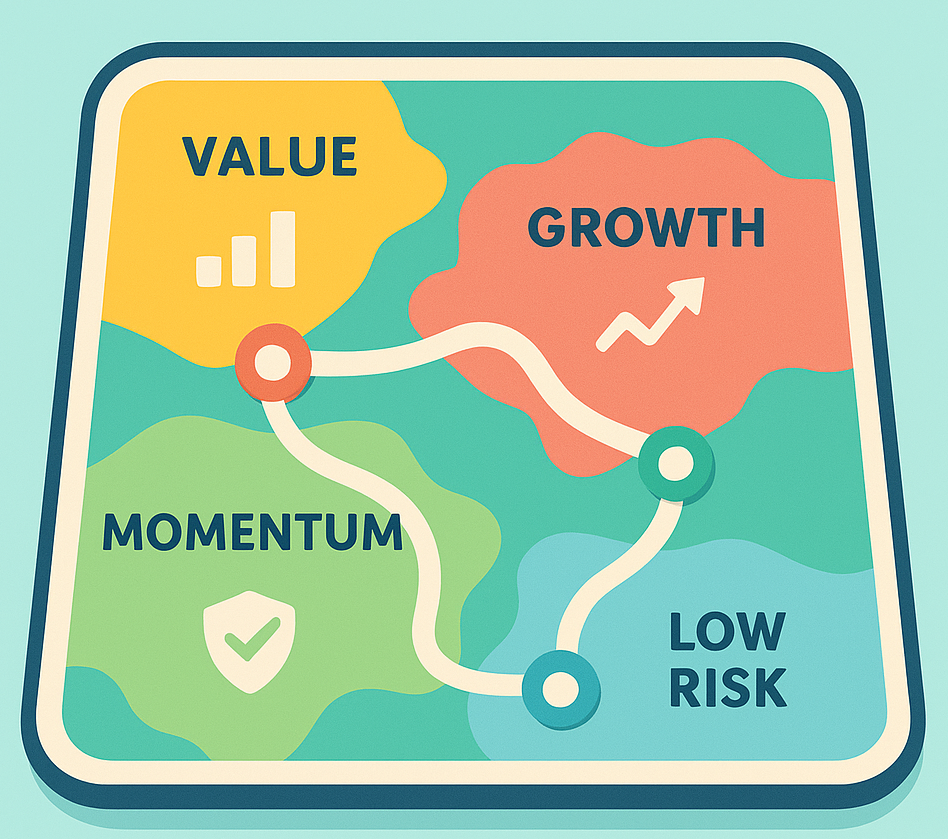

7 Was hinter professionellen Anlagestrategien steckt
7.1 Was ist eigentlich eine Strategie?
Wenn du das Wort „Strategie“ hörst, denkst du vielleicht an Schach, Videospiele oder Sport. Man wählt Züge, um ein Ziel zu erreichen – nicht spontan, sondern mit Plan.
Beim Investieren ist das ähnlich. Eine Anlagestrategie ist nichts anderes als eine Regel, nach der du Geld entscheidest, wohin es fließt. Statt nach Gefühl oder Bauch zu handeln („Ich glaube, die Aktie geht hoch!“), nutzt du systematische Denkweisen.

Jede dieser Regionen steht für einen anderen Weg, mit Geld umzugehen:
👉 Value – der Schnäppchenjäger
👉 Growth – der Zukunfts‑Optimist
👉 Momentum – der Trend‑Reiter
👉 Low Risk – der GelasseneProfessionelle Investor/-innen kombinieren oft mehrere davon. Du musst aber nicht alle verstehen, um zu profitieren – ein Überblick reicht schon, um dich selbstbewusster zu fühlen.
7.1.1 Warum Profis Strategien benutzen
Profis wissen: Märkte sind chaotisch. Niemand kann dauerhaft vorhersagen, was nächste Woche passiert. Aber man kann Muster erkennen, die sich immer wiederholen, weil sie auf menschlichem Verhalten beruhen.
Menschen – egal ob Trader oder Hobby‑Anleger – bewegen sich oft in Herden. Sie überreagieren, haben Angst oder Gier, kaufen zu spät oder verkaufen zu früh. Strategien helfen dabei, sich davon zu schützen.
Eine gute Strategie ist also wie ein mentaler Kompass: Sie verhindert, dass dich Emotionen auf dem Finanz‑Meer abdriften lassen.
7.1.2 Der Plan hinter dem Plan
Bevor Profis Geld einsetzen, fragen sie:
1️⃣ Was will ich erreichen (Wachstum, Sicherheit, Einkommen)?
2️⃣ Wie viel Schwankung halte ich aus?
3️⃣ Nach welcher Regel wähle ich Investments?
Die Strategie beantwortet genau die dritte Frage: Wie entscheidest du systematisch, wo du investierst – statt jedes Mal zu raten.
7.2 Die vier Großen
Jetzt lernst du die vier bekanntesten Grundideen kennen. Sie sind wie verschiedene Charaktere in einer Serie – alle unterschiedlich, aber gemeinsam spannend.
7.2.1 Value – der kluge Käufer
Value heißt wörtlich „Wert“. Value‑Investoren suchen nach Firmen, deren Aktienpreis niedriger ist, als der wahre Wert der Firma. Das ist, als würdest du beim Einkaufen ein gutes Produkt im Sale finden.
Beispiel aus dem Alltag: Stell dir vor, du brauchst ein neues Smartphone.
Das Modell von Marke A kostet 900 Euro, Marke B bietet etwas Gleichwertiges für 600 Euro mit Rabatt.
Value‑Denker sagen: „Warum mehr bezahlen, wenn der Nutzen gleich ist?“
So sucht Warren Buffett seit Jahrzehnten nach „unterbewerteten“ Firmen – soliden Unternehmen, die gerade unbeliebt oder übersehen sind.
Sie sind keine Mode‑Aktien, aber stabil, profitabel und günstig zu haben.
⚙ Psychologische Idee: Menschen übertreiben. Wenn eine Branche out ist, sinken Preise oft zu stark – Value‑Anleger nutzen das.
Sie warten, bis andere merken: „Hey, die Firma läuft ja immer noch gut!“ – und dann steigt der Kurs wieder.
💡 Für Einsteiger/-innen: Du musst keine Bilanzen lesen. Du kannst mit einem „Value‑ETF“ investieren, der automatisch günstige Firmen auswählt.
Damit machst du mit, ohne zu recherchieren.
7.2.2 Growth – der Zukunfts‑Optimist
Growth bedeutet „Wachstum“. Hier stehen Firmen im Mittelpunkt, die noch nicht riesige Gewinne machen, aber stark wachsen – etwa durch neue Technologien oder Dienstleistungen.
Beispiel: Ein Start‑up, das nachhaltige Batterien entwickelt – heute klein, morgen vielleicht Marktführer.
Wer Growth‑Strategie verfolgt, bezahlt heute etwas mehr in der Hoffnung, dass die Zukunft großartig ist.
Das sind die Visionär/-innen unter den Anlegern.
Alltagsvergleich: Du unterstützt eine junge Band, die noch klein Clubs spielt, aber unglaubliches Potenzial hat.
Eines Tages spielt sie auf der Hauptbühne – und du warst von Anfang an dabei.
Auch diese Strategie hat Risiken: Manche Bands (oder Firmen) bleiben ewig im Underground.
Aber manche werden ein Welterfolg.
Für dich heißt das: Wenn du an Zukunftsthemen glaubst – erneuerbare Energien, Digitalisierung, Gesundheit – dann darf Growth ein Teil deines Depots sein.
Nur bitte nicht alles. Ergänzung, nicht Ersatz.
7.2.3 Momentum – der Trend‑Reiter
Momentum‑Investoren sagen: „Gewinner bleiben oft Gewinner – zumindest eine Weile.“
Das klingt oberflächlich, ist aber statistisch beobachtbar: Aktien, die zuletzt gut liefen, laufen kurzfristig häufig weiter. Warum? Weil immer mehr Leute aufspringen.
Das ist wie Mode – wenn eine Marke beliebt ist, kaufen noch mehr Menschen, bis es sich irgendwann sättigt.
Beispiel: In sozialen Medien siehst du, dass ein Sporttrend viral geht. Zuerst lachen alle, dann will jede(r) mitmachen.
Das Momentum baut sich auf – irgendwann stoppt es, aber bis dahin macht die Bewegung Spaß.
Profis nutzen Daten, um solche Trends zu erkennen. Einfacher: Du kannst einen ETF auf Momentum‑Strategie nehmen, der automatisch die besten Trend‑Aktien einsammelt.
⚙ Risiko: Trends kippen. Daher nicht blind folgen, sondern kombinieren - etwas Momentum, etwas Value = gute Mischung.
7.2.4 Low Risk – der Gelassene
Low Risk heißt geringes Risiko. Klingt langweilig, aber überraschenderweise zeigen viele Studien: Aktien mit kleineren Schwankungen („langweilige“ Firmen wie Versicherer oder Energieversorger) laufen langfristig besser als viele riskante Rallye‑Aktien.
Das ist die „Schildkröte‑gewinnt‑das‑Rennen“-Variante aus dem späteren Kapitel 9.
Beispiel: Du spielst ein Spiel, bei dem jede Runde Gewinn oder Verlust bringen kann.
Manche gehen aufs Ganze und verlieren oft. Andere spielen ruhig, konsequent - und landen am Ende vorn.
Low Risk erinnert an Buddhismus im Investieren: weniger Aufregung, mehr Balance.
Im Portfolio funktioniert das wie eine ruhige Basslinie im Song - nichts Spektakuläres, aber ohne sie würde das Ganze nicht harmonieren.
Für dich heißt das: Wenn du Angst vor täglichem Auf und Ab hast, lassen sich Low‑Volatility‑ETFs oder Anleihen beimischen, um Stabilität zu bringen.
7.3 Warum diese Strategien funktionieren –der menschliche Faktor
Alle vier Strategien haben einen gemeinsamen Kern: Sie nutzen psychologische Verhaltensmuster am Markt.
👉 Value: Menschen überreagieren auf schlechte Nachrichten – und verkaufen zu viel.
👉 Growth: Menschen lieben Geschichten und Visionen – darum fließt Kapital in Innovationsfirmen.
👉 Momentum: Menschen folgen Trends – Nachfrage treibt Preise weiter.
👉 Low Risk: Menschen suchen Kick – darum übersehen sie ruhige Gewinner. Diese Verhaltensmuster ändern sich kaum – deshalb funktionieren die Strategien immer wieder.
7.4 Wie du solche Ideen einfach nutzen
Die gute Nachricht: Du musst nichts davon selbst umsetzen. Es gibt Fonds und ETFs, die genau solche Strategien programmatisch abbilden. Für den Start genügt eine Kombination aus Basis‑ETF (= breit gestreut) + einem kleinen strategischen Baustein.
Beispiel:
90 % Welt‑ETF + 10 % Momentum‑ETF oder Value‑ETF = Strategie‑Mischung
Das ist wie beim Kochen: eine Grundsoße und eine Prise Gewürz - mehr Charakter, aber nicht zu scharf.
7.5 Das Spiel mit den Emotionen
Strategien sind nicht nur Mathematik; sie sind Werkzeuge gegen unsere eigenen Gefühle. Wenn die Börse fällt, schaltet das Gehirn auf Flucht – „Verkaufen!“ Wenn sie steigt, will es mehr – „Kaufen!“ Regeln stoppen dieses Hin und Her. Darum funktionieren Strategien: Sie nehmen dir Entscheidungsstress. Du folgst System statt Stimmung.
7.6 Trugschluss: Eine Strategie für immer
Es gibt nicht die eine beste Strategie für alle Zeiten. Wie im Sport wechseln Spielsysteme je nach Phase des Spiels. Manchmal profitiert Value, manchmal Momentum, manchmal Growth.
Wer breit aufstellt oder Geduld hat, übersteht alle Phasen.
Langfristiger Erfolg kommt nicht von „die beste Strategie finden“, sondern von „eine passende Strategie beibehalten“.
7.7 Mini‑Leitfaden: Deine erste Strategiewahl
Frage dich:
1️⃣ Bin ich eher Schnäppchenjäger (Value)?
2️⃣ Zukunftsfan (Growth)?
3️⃣ Trend‑Beobachter (Momentum)?
4️⃣ Sicherheitsliebend (Low Risk)?
Kein Typ ist besser – es ist Charaktersache.
Wenn du weißt, wer du bist, passt du die Strategie deiner Persönlichkeit an.
Praktisch bedeutet das:
👉 Widme 80–90 % deinem Basis‑Portfolio (ETF auf Welt).
👉 Die restlichen 10–20 % dürfen „Spielwiese“ sein – um Strategien auszuprobieren.So lernst du, ohne dass ein Fehler gleich wehtut.
7.8 Strategien sind wie Werkzeuge
Ein Hammer ist toll – für Nägel. Aber für Schrauben brauchst du einen Schraubenzieher. Value, Growth, Momentum und Low Risk sind Werkzeuge für verschiedene Phasen und Ziele. Wichtig ist, dass du weißt, welches Werkzeug wann passt - nicht, dass du alle gleichzeitig schwenkst.
7.10 Das Wichtigste in einem Satz
Erfolg an der Börse hat nicht der schlauste, sondern der konsequenteste Mensch.
Strategien geben dir Konsistenz. Wer nach Regeln spielt, macht weniger Fehler.
7.11 Was du aus diesem Kapitel mitnimmst
👉 Strategien helfen, Emotionen durch Regeln zu ersetzen.
👉 Es gibt vier große Grundrichtungen: Value, Growth, Momentum, Low Risk.
👉 Jede funktioniert anders – keine ist immer die beste.
👉 Du kannst sie mit ETFs einfach nachvollziehen.
👉 Kombination = Stabilität + Renditechance.
👉 Bleib dran – und ändere Strategien nicht dauernd aus Langeweile.7.12 Zum Nachdenken
„Anlegen ohne Strategie ist wie Segeln ohne Karte. Du bewegst Dich – aber weißt nicht wohin.“
Mit Strategie weißt du, woher der Wind kommt – und wann du die Segel setzen musst.
7.13 Ausblick
Im nächsten Kapitel geht es tiefer in das erste der vier Strategiethemen: Momentum.
Du wirst sehen, wie „Trends folgen“ funktioniert, warum dies manchmal belohnt wird und warum Timing nicht magisch, sondern psychologisch ist.